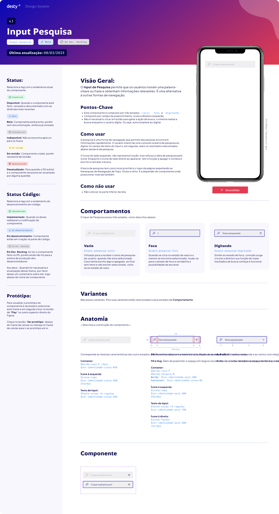
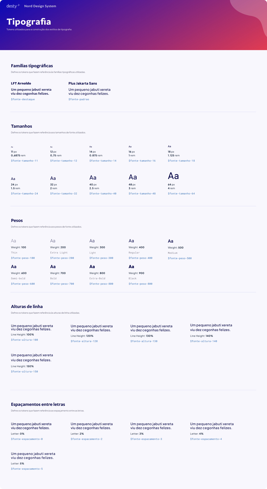
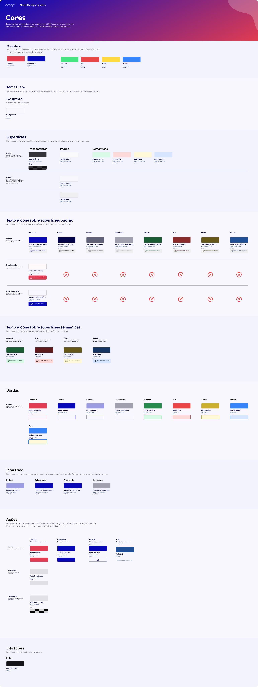
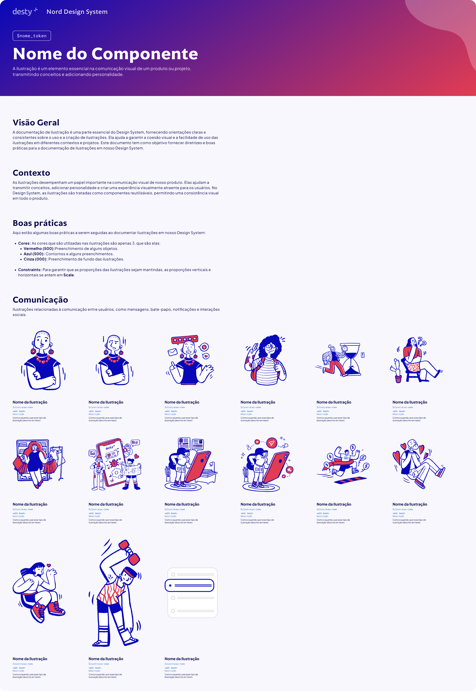

Após a criação dos novos componentes, foi realizada uma análise detalhada. Isso incluiu testar os componentes em diferentes cenários, avaliar a eficácia e coletar feedback dos times.
A análise ajudou a identificar melhorias e garantir que os componentes atendessem tanto às necessidades do BaaS quanto aos nossos objetivos de UX — especialmente em acessibilidade. Utilizamos amplamente o Figma Analytics e KPIs internos para embasar esse processo.
Os componentes atualizados foram desenvolvidos e implementados no Design System 2.0. Com uma biblioteca de componentes bem estruturada, os esforços de UI e engenharia foram significativamente otimizados.
Isso liberou recursos para focar na melhoria da experiência do usuário — e deu à empresa uma base escalável para a expansão contínua do BaaS.



